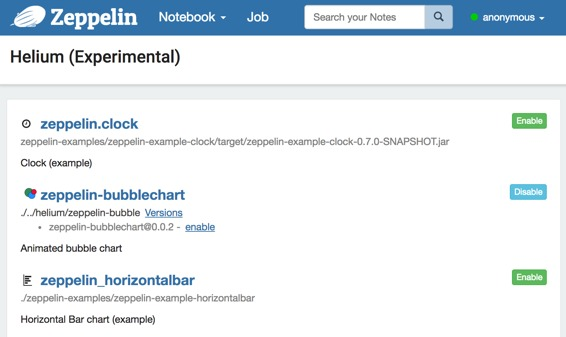
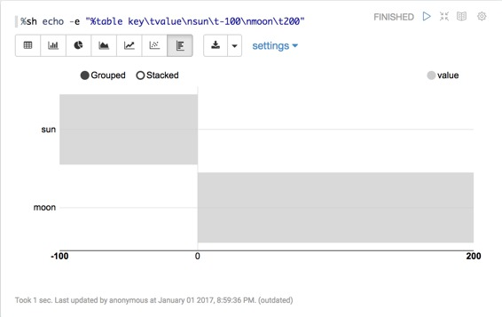

Writing a new Visualization (Experimental) ( 编写新的可视化（实验） )
原文链接 : http://zeppelin.apache.org/docs/0.7.2/development/writingzeppelinvisualization.html
译文链接 : http://www.apache.wiki/pages/viewpage.action?pageId=10031097
什么是 Apache zeppelin 可视化
Apache Zeppelin 可视化是一种可插拔的软件包，可以在运行时通过 Zeppelin 中的 Helium 框架 加载/卸载。可视化是一个 javascript npm 包，用户可以像 notebook 中任何其他内置的可视化一样使用它们。
它是怎么运行的？
1.Load Helium package files from registry ( 从注册表中加载 Helium 包 )
Zeppelin 需要知道可视化包可用。 Zeppelin 默认从本地注册表（默认为 helium/ 目录）搜索 Helium 包文件。 Helium 包文件提供 name ，artifact 等信息。它类似于 npm 包中的 package.json 。
这是一个例子 helium/zeppelin-example-horizontalbar.json
{
"type" : "VISUALIZATION",
"name" : "zeppelin_horizontalbar",
"description" : "Horizontal Bar chart (example)",
"artifact" : "./zeppelin-examples/zeppelin-example-horizontalbar",
"license" : "Apache-2.0",
"icon" : "<i class='fa fa-bar-chart rotate90flipX'></i>"
}
查看 创建 helium package file 部分以了解它。
2.Enable packages ( 启用包 )
一旦 Zeppelin 从本地注册表加载 Helium 包文件，可用的包将显示在 Helium menu 中。
点击 “enable ( 启用 )” 按钮。

3.Create and load visualization bundle on the fly ( 快速创建并加载可视化包 )
一旦启用可视化包，HeliumVisualizationFactory 将创建一个 js bundle 。 js bundle 由 helium/visualization/load rest api 端点提供。
4.Run visualization ( 运行可视化 )
Zeppelin 显示加载的可视化的附加按钮。用户可以像任何其他内置可视化一样使用。

Write new Visualization ( 编写新的可视化 )
1.Create a npm package ( 创建一个 npm 包 )
在新的 Visualization 目录中创建一个 package.json 。通常，您可以在 package.json 中添加任何依赖项，但 Zeppelin 可视化包只允许两个依赖关系： zeppelin-vis 和 zeppelin-tabledata 。
下面是一个例子：
{
"name": "zeppelin_horizontalbar",
"description" : "Horizontal Bar chart",
"version": "1.0.0",
"main": "horizontalbar",
"author": "",
"license": "Apache-2.0",
"dependencies": {
"zeppelin-tabledata": "*",
"zeppelin-vis": "*"
}
}
2.Create your own visualization ( 创建你自己的可视化 )
要创建自己的可视化，您需要创建一个 js 文件，并从 zeppelin-vis 包导入 Visualization 类并扩展该类。 zeppelin-tabledata 包提供了一些有用的转换，如 pivot ，可以在可视化中使用。 （也可以创建自己的 transformation ）。
Visualization 类，有几种方法需要 override 和 implement 。这是简单的可视化，只是打印 Hello world。
import Visualization from 'zeppelin-vis'
import PassthroughTransformation from 'zeppelin-tabledata/passthrough'
export default class helloworld extends Visualization {
constructor(targetEl, config) {
super(targetEl, config)
this.passthrough = new PassthroughTransformation(config);
}
render(tableData) {
this.targetEl.html('Hello world!')
}
getTransformation() {
return this.passthrough
}
}
要了解有关 Visualization 类的更多信息，请查看visualization.js 。
您可以在 此处 查看完整的可视化包示例。
Zeppelin 的内置可视化使用相同的 API ，因此您可以查看 built-in visualizations 作为附加示例。
3.Create Helium package file ( 创建 Helium 包文件 )
Helium package file 是一个 json 文件，提供有关应用程序的信息。 Json 文件包含以下信息
{
"type" : "VISUALIZATION",
"name" : "zeppelin_horizontalbar",
"description" : "Horizontal Bar chart (example)",
"license" : "Apache-2.0",
"artifact" : "./zeppelin-examples/zeppelin-example-horizontalbar",
"icon" : "<i class='fa fa-bar-chart rotate90flipX'></i>"
}
type ( 类型 )
创建可视化时，“type ( 类型 )” 应该是 “VISUALIZATION ( 可视化 )”。如果您对其他类型的软件包感兴趣，请查看 application ( 应用程序 ) 类型。
name ( 名称 )
可视化的名称。应该是独一无二的。允许 [A-Za-z90-9_] 。
description ( 描述 )
关于可视化的简短描述。
artifact
可视化 npm 包的位置。支持带有版本或本地文件系统路径的 npm 软件包。
例如
当 artifact 存在于 npm 存储库中时
artifact: "my-visualiztion@1.0.0"
当 artifact 存在于本地文件系统中时
artifact: "/path/to/my/visualization"
license ( 执照 )
许可信息。
例如
license: "Apache-2.0"
icon ( 图标 )
用于可视化选择按钮的图标。此字段中的字符串将被呈现为 HTML 标记。
例如
icon: "<i class='fa fa-coffee'></i>"
4.Run in dev mode ( 以开发者模式运行 )
将您的 Helium 包文件 放在本地注册表（ ZEPPELIN_HOME /helium）中。运行 Zeppelin 。然后在可视化开发模式下运行 zeppelin-web 。
cd zeppelin-web
yarn run visdev
您可以浏览 localhost：9000 。每次刷新您的浏览器，Zeppelin 将重建您的可视化并重新加载更改。